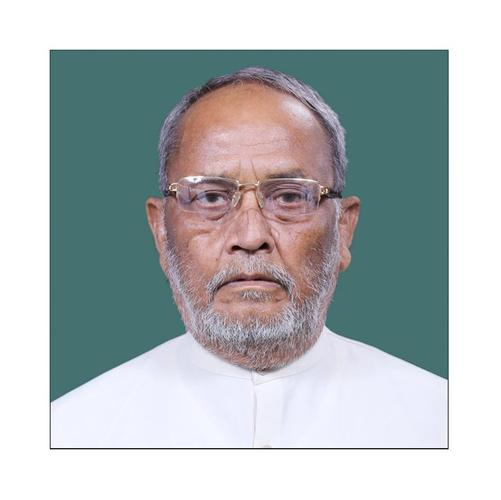

मोहम्मद तस्लीमुद्दीन

प्रमुख कार्यकाळ:
गृह मंत्रालय, राज्यमंत्री
१९९६ - १९९६
अवजड उद्योग आणि सार्वजनिक उपक्रम मंत्रालय, राज्यमंत्री
२००४ - २००४
कृषी मंत्रालय, राज्यमंत्री
२००४ - २००९

एचडी देवेगौडा मंत्रिमंडळ
गृह मंत्रालय
राज्यमंत्री
पहिले मनमोहन सिंग मंत्रिमंडळ
एचडी देवेगौडा मंत्रिमंडळ

1_Upload_1612.pdf
1_Upload_1618.pdf

एच. डी. देवेगौड़ा
o-H._D._Deve_Gowda.htmlपंतप्रधान
१ जून १९९६ - २१ एप्रिल १९९७
एच. डी. देवेगौड़ा
o-H._D._Deve_Gowda.htmlपंतप्रधान
१ जून १९९६ - २९ जून १९९६
मोहम्मद तस्लीमुद्दीन
o-Mohammed_Taslimuddin.htmlराज्यमंत्री
१ जून १९९६ - १० जुलै १९९६
संबंधित आदेश
1_Upload_1612.pdf[17]१ जून १९९६मंत्रिमंडळ1_Upload_1614.pdf[34]२९ जून १९९६विभागात बदल1_Upload_1618.pdf[0]१० जुलै १९९६विभागात बदल